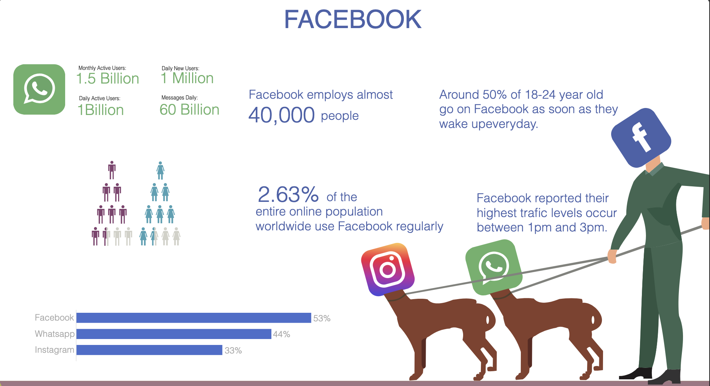
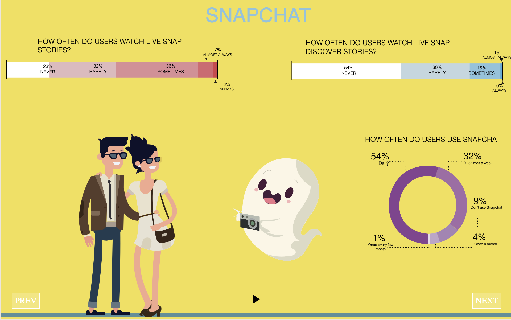
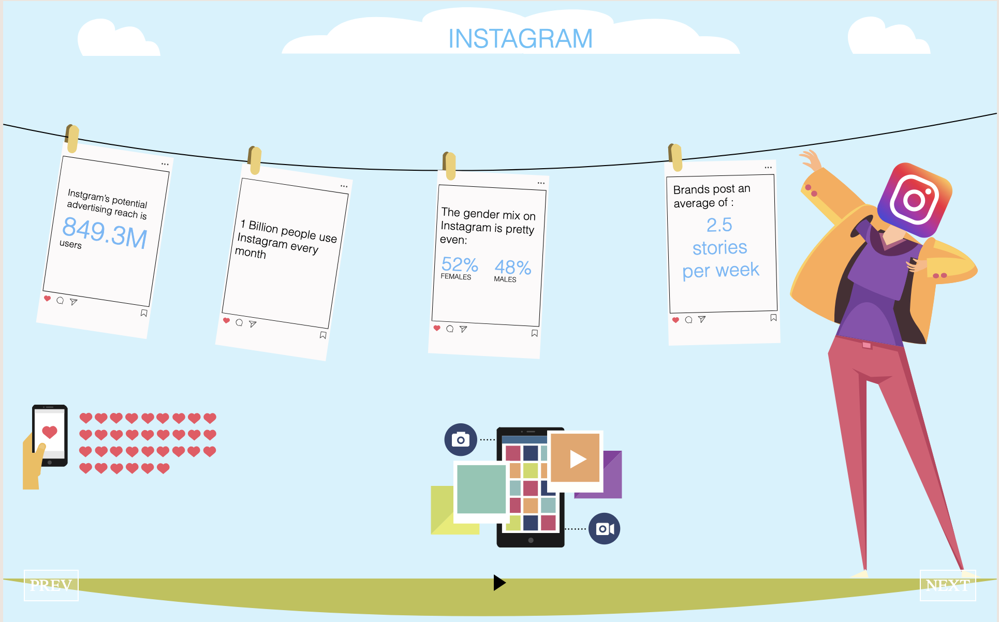
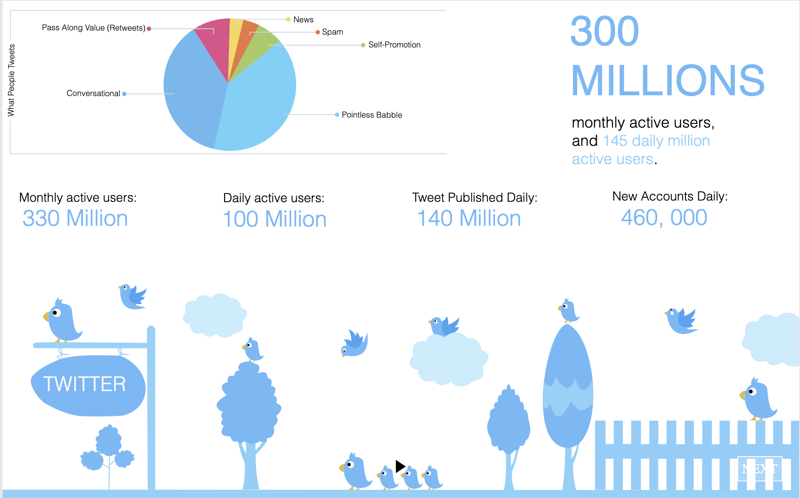

SOCIAL MEDIA
INFOGRAPHIC
This project is a custom-coded, interactive presentation visualizing facts and statistics across major social media platforms. Rather than relying on standard presentation software, I designed all vector assets from scratch and developed the entire experience using HTML, CSS, and Vanilla JavaScript to create a bespoke, browser-based infographic.
The visual direction utilizes a vibrant, flat-vector illustration style to make dense statistical data highly engaging. I created distinct visual metaphors for each platform.
For example, to illustrate Facebook's massive digital ecosystem, I designed a character with a Facebook logo head "walking" two dogs that have Instagram and WhatsApp heads—representing the parent company's major acquisitions. Other slides feature custom data visualizations, such as pie charts for demographic breakdowns and animated elements matching the brand identities of Twitter and Snapchat.


On the development side, the presentation operates as an interactive, single-page web application. I wrote custom JavaScript to handle the state management of the slides, allowing users to seamlessly navigate forward and backward using the built-in "PREV" and "NEXT" pagination controls.
This project demonstrates a hybrid skill set: the creative ability to conceptualize and illustrate data, combined with the technical proficiency to write the code that brings those illustrations to life in the browser.


Explore the coded presentation firsthand. I have embedded the live project directly below—click through the slides using the on-screen navigation to see the coded assets in action. Hover on the charts and icons to know more details!